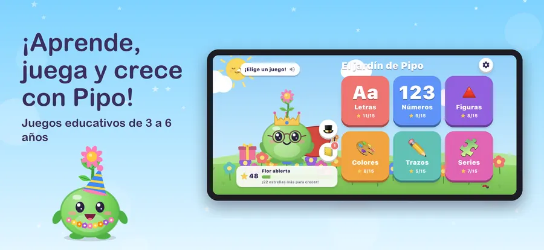
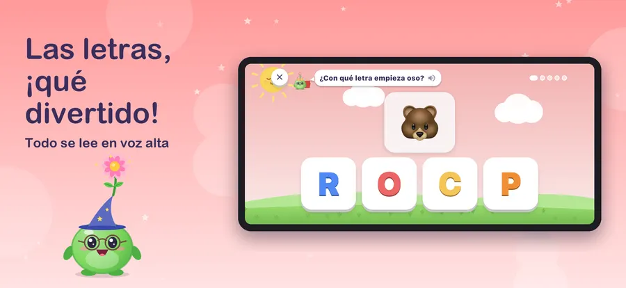
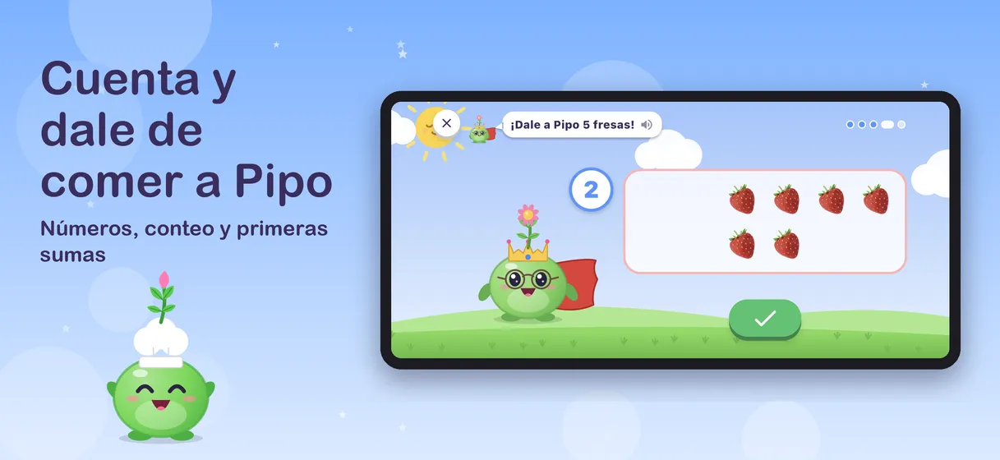
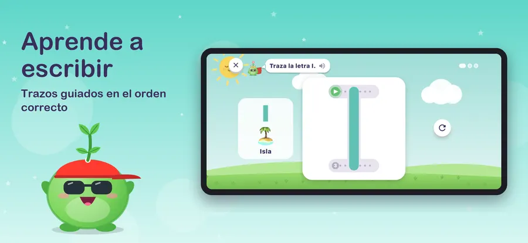
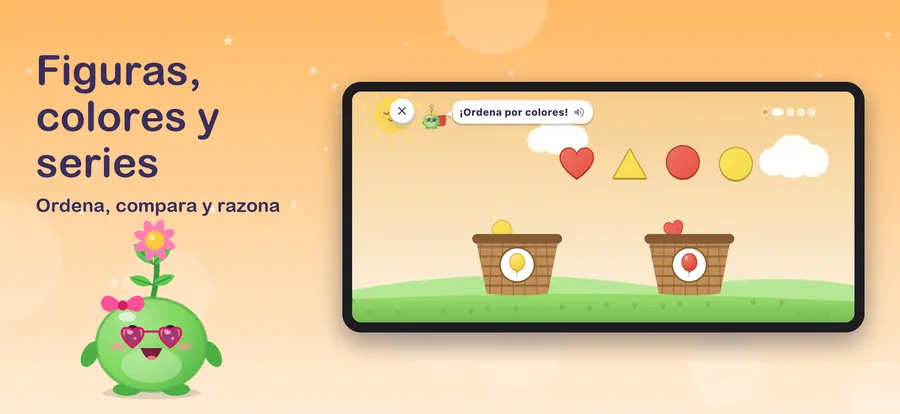
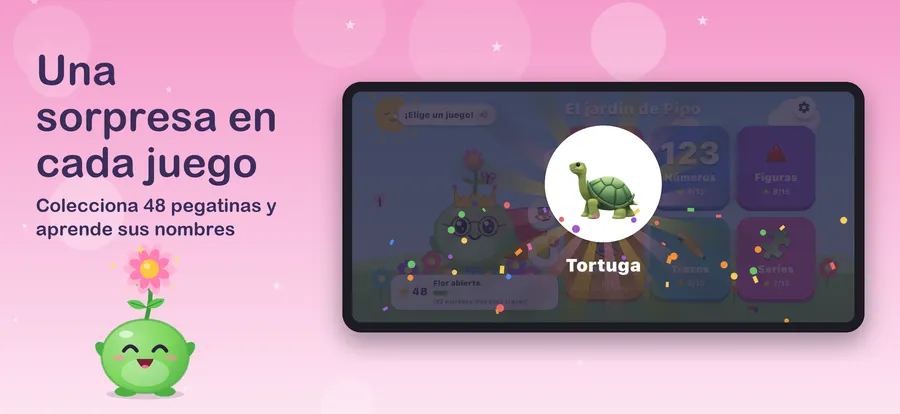
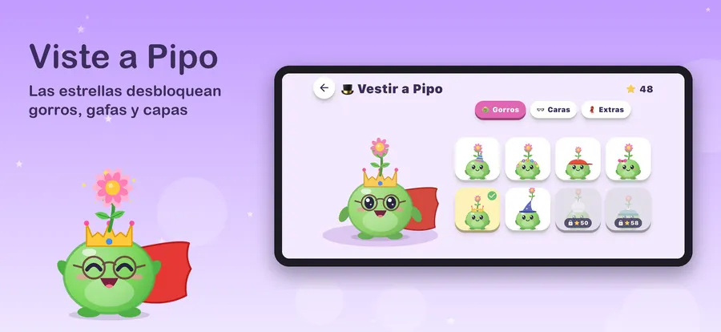
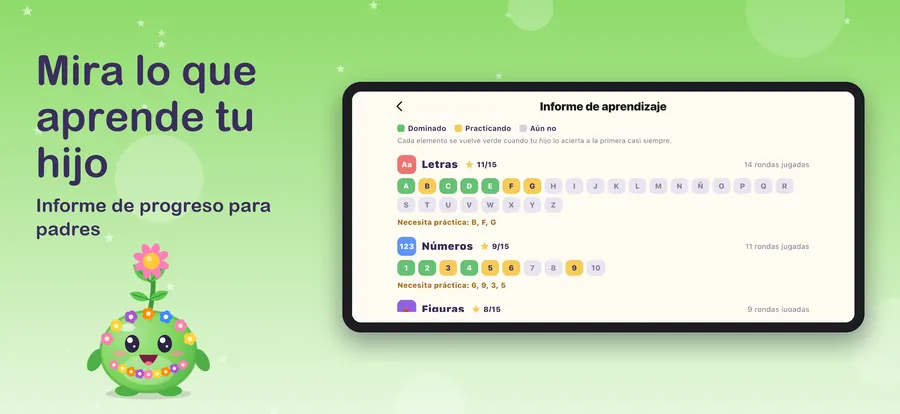
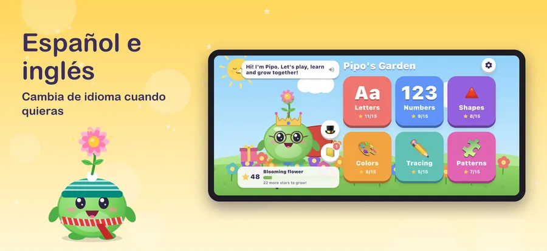

Pipo's Garden
Edad 3–6 Ya disponibleAyuda a Pipo, una pequeña semilla, a convertirse en flor. Actividades de preescolar con letras, números, figuras, colores, tamaños, trazos y series, en español, inglés y ucraniano.








